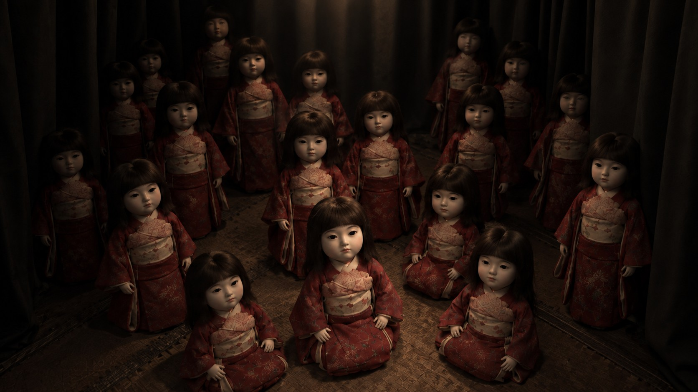

A REAL-WORLD HORROR EXPERIENCE
見ているのは、あなた。
映っているのも、あなた。
視点を、置き去りにする。
01
ABOUT THE EXPERIENCE
自分の背中を見ながら、歩く。
その姿は、
間違いなく
自分だった。
ヘッドセットをかぶる。
見えているのは、離れたカメラからの景色。
そこに映る自分を頼りに、現実の部屋を歩いていく。
動かしている身体と、見ている身体。その距離が、少しずつ感覚を狂わせていく。

02
A DISPLACED POINT OF VIEW
WEB上の視点体験
自分の視点が、
自分のものではなくなる。
CURRENT VIEW
入口からの視点
部屋の外から、自分の動きを見つめます。
ポインターを動かすと、画面の中の自分が歩きます。画面をなぞると、中の自分が歩きます。
03
ENCOUNTER THE WORK
DCEXPO 2026 / イベント開催概要
- 会期
- —
- 会場
- 幕張メッセ
- 入場
- 無料（登録制）
- 作品名
- 廻り視
- 形式
- 体験型ホラー / Meta Quest 3
- 制作
- Roil Studio
AFTERIMAGE / THE LAST VIEW